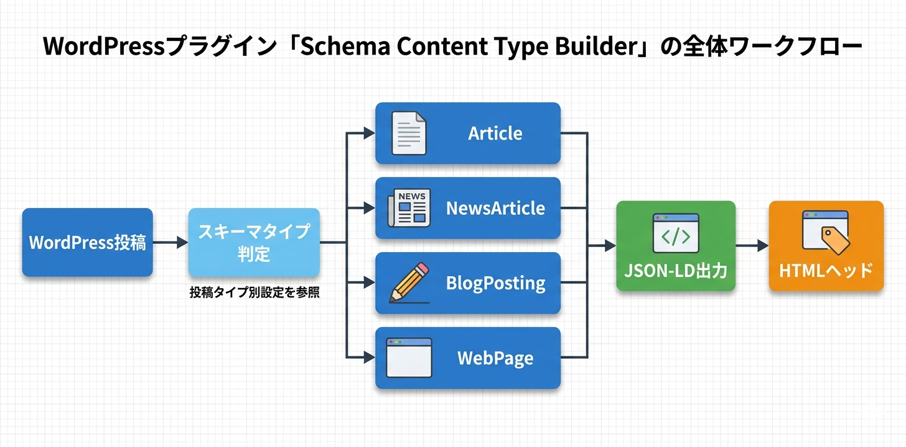

Kashiwazaki SEO Schema Content Type Builder マニュアル

Kashiwazaki SEO Schema Content Type Builder は、WordPressの投稿タイプごとに構造化データ（JSON-LD）を自動生成するSEOプラグインです。Article、NewsArticle、BlogPosting、WebPageの4種類のスキーマに対応し、BreadcrumbListやアーカイブページのスキーマも含めた包括的な構造化データを出力します。
構造化データ（JSON-LD）は、検索エンジンがコンテンツの意味を正確に理解するための重要な技術要素です。本プラグインはArticle、NewsArticle、BlogPosting、WebPageの4種類のスキーマを投稿タイプ別に自動出力します。
主な機能
JSON-LD自動生成
Article/NewsArticle/BlogPosting/WebPageの4種類の構造化データを自動出力
投稿タイプ別設定
投稿タイプごとにスキーマタイプと出力内容を個別設定
アーカイブ対応
アーカイブページにもCollectionPage等のスキーマを出力
プラグインの特長
- Article、NewsArticle、BlogPosting、WebPageの4種類のスキーマタイプに対応
- 投稿タイプ（post、page、カスタム投稿タイプ）ごとにスキーマタイプと出力内容を個別設定
- BreadcrumbList構造化データの自動生成に対応
- アーカイブページにCollectionPage等のスキーマを自動出力
- 管理画面は1ページ・5タブ構成でシンプルに設定を管理
- 4つのAJAXハンドラーによるスムーズな設定操作
- 外部HTTPリクエストなし、軽量で高速に動作

SEO・GEO（生成AI最適化）への効果
リッチリザルトの実現
本プラグインが出力するJSON-LD構造化データにより、Google検索結果にリッチリザルト（記事名、著者名、公開日など）が表示されるようになります。構造化データはArticle、NewsArticle、BlogPosting、WebPageの各スキーマに対応しており、コンテンツの種類に応じた正確なマークアップが可能です。
投稿タイプ別の正確なスキーマ割り当て
投稿タイプごとにスキーマタイプを個別設定できるため、ニュース記事にはNewsArticle、ブログ記事にはBlogPosting、固定ページにはWebPageといった正確なタイプ割り当てが実現します。これにより、検索エンジンがコンテンツの性質を正しく理解できます。
サイト階層構造の可視化
BreadcrumbList構造化データの自動出力により、検索エンジンがサイトの階層構造を正確に把握できます。検索結果にパンくずナビゲーションが表示され、ユーザーのサイト内回遊を促進します。
生成AI（GEO）への対応
構造化データから、AIがエンティティ情報（記事の著者、公開日、コンテンツタイプなど）を正確に抽出できるようになります。JSON-LDによる機械可読なデータ提供は、AI検索エンジンやLLMベースのシステムがコンテンツを正確に引用する際に重要な役割を果たします。
目次（マニュアル構成）
| ページ | 内容 |
|---|---|
| 概要 | プラグインの機能概要、SEO/GEO効果、動作要件 |
| インストール・初期設定 | インストール手順、有効化、管理画面の基本操作 |
| スキーマ設定 | 投稿タイプ別スキーマ設定、BreadcrumbList、アーカイブページ設定 |
| トラブルシューティング | よくある問題と対処法、動作要件、技術仕様、アーキテクチャ |
動作要件
| 項目 | 要件 |
|---|---|
| WordPress | 5.0 以上 |
| PHP | 7.4 以上 |
| 対応ブラウザ | Chrome、Firefox、Safari、Edge（最新版） |
インストール後すぐに使い始めたい場合は、インストール・初期設定ページに進んでください。